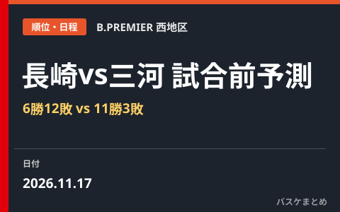

長崎vs三河を試合前予測、11勝3敗の三河が有利

広告スペース（AdSense）
11月17日19時05分から、長崎ヴェルカとシーホース三河がハピネスアリーナで対戦します。長崎は6勝12敗、三河は11勝3敗です。
この記事では、両チームの数字を比べて試合を予測します。
【事実】現在の成績と順位
長崎はB.PREMIER西地区の10位です。得失点差はマイナス88点です。
三河は西地区の3位です。得失点差はプラス167点です。
長崎は昨季のB1王者です。今季は苦しい序盤が続いています。
【事実】チーム数字の比較
| 項目 | 長崎 | 三河 |
|---|---|---|
| 平均得点 | 77.3点 | 91.9点 |
| FG成功率 | 45.5% | 50.4% |
| 3P成功率 | 34.5% | 39.3% |
| 平均リバウンド | 33.8本 | 39.5本 |
| 平均アシスト | 19.3本 | 21.1本 |
| 平均スティール | 6.8本 | 5.1本 |
スティールだけは長崎が上回っています。ほかの項目は三河が上です。
【事実】チーム内の貢献度上位
貢献度の指標はEFFの平均です。三河はガードナー選手の23.4、オマラ選手の22.0が目立ちます。
長崎はブラントリー選手が20.8、ランドルフ選手が18.5です。馬場雄大選手は15.7です。
【予測】三河が有利、長崎の勝機はここ
当サイトの予測は、三河の勝利です。得点力とリバウンドの差が大きいためです。
三河は平均92点近くを取っています。長崎は平均失点が約82点で、守り切るには得点を止める必要があります。
長崎の勝機は、スティールからの速攻です。ホームで走る展開に持ち込めれば、点差は縮まります。
不確かな点もあります。出場状況は試合当日の発表を待つ必要があります。
出典（4件）
広告スペース（AdSense）